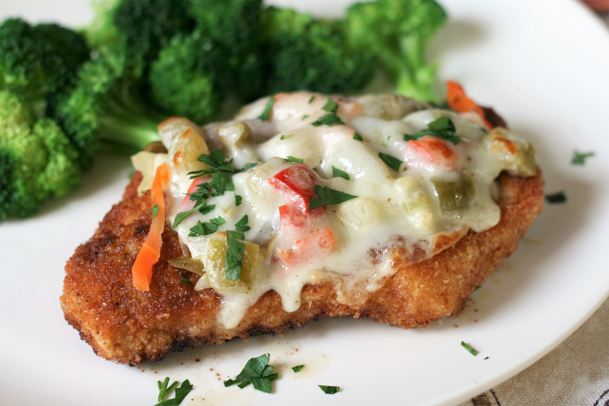

Crispy Baked Chicken with Giardiniera

Description
Perfectly tender and juicy chicken cutlets are topped with mild or hot giardiniera (your choice!) and provolone cheese. Play around with different crouton flavors for variety.
Ingredients
- 4 (4 ounce) boneless, skinless chicken breasts
- salt and freshly ground black pepper to taste
- 1 ½ cups butter and garlic croutons
- ½ cup all-purpose flour
- 2 large eggs, beaten
- 3 tablespoons olive oil
- ½ cup giardiniera
- 4 slices provolone cheese
- 2 tablespoons minced fresh parsley
Steps
- Preheat oven to 400 degrees F (200 degrees C).
- Pound chicken breasts with a meat mallet to an even 1/4-inch to 1/2-inch thickness. Season with salt and pepper on both sides.
- Pulse croutons in a small food processor until they have a fine consistency. Put flour, eggs, and crouton crumbs into 3 separate shallow dishes.
- Dip each breast first into flour, shaking off the excess. Next, dip into egg mixture, letting any excess drip off. Coat chicken in crouton crumbs and set on a plate.
- Heat oil over medium heat in a large oven-proof skillet until hot. Fry chicken for 2 minutes, flip, and fry an additional 2 minutes. Remove from heat. Top each breast with 2 tablespoons giardiniera and 1 slice of cheese.
- Cook in the preheated oven until chicken is no longer pink in the center and the juices run clear, 8 to 10 minutes. An instant-read thermometer inserted into the center should read at least 165 degrees F (74 degrees C). Top with parsley before serving.
Home Page